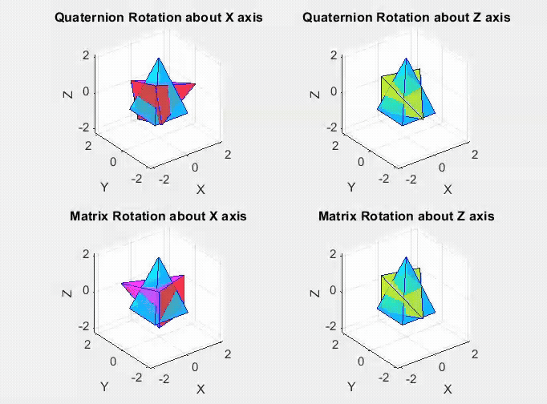

When keeping track of rotations in a local frame, two options are using matrices or quaternions. When using matrices, each rotation is represented by a matrix and needs to be remultiplied every new rotation. This can result in Gimbal Lock, an instance when a degree of freedom is lost due to the matrix multiplication (shown in bottom left graph). A way to avoid this is to use quaternions to track rotation. Not only is a more computationally efficient, as stacked up rotations can all be represented by one quaternion, but it also diminishes the any likely hood of gimbal lock (shown by top left graph).

Each blue pyramid is the initial starting point. Then each pyramid is rotated 90 degrees about the y axis. The left column shows a programmed rotation about the x axis while the right column shows a programmed rotation about the z axis. Seen in the bottom left, the pyramid still rotates about the z axis, even though it is programmed to rotate about the x axis. This is due to gimbal lock when multiplying matrices.
Below is the poster I presented to explain to my classmates. It also includes relevant formulas, and a more mathematical explanation.